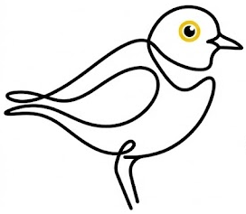

HÄR ÄR DU
Position

Redo att mäta
LATITUD
—
LONGITUD
—
Decimalgrader · WGS 84
NOGGRANNHET—
MÄTTID—
Mät först. Klistra sedan in bilden i chatten.
Om filen öppnas i webbläsaren: håll inne bilden och välj Spara bild.
HÄR ÄR DU

—
—
Mät först. Klistra sedan in bilden i chatten.
Om filen öppnas i webbläsaren: håll inne bilden och välj Spara bild.